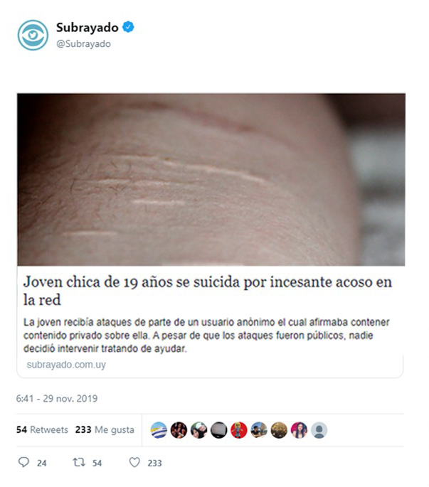
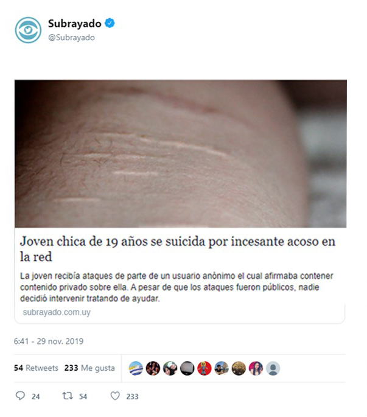

No seamos indiferentes, actuemos mientras hay tiempo
A veces las opciones de la plataforma no son suficientes. La OMS estimó que cada año se suicidan unos 600 mil jóvenes de entre 14 y 28 años, se estima que al menos mitad de los casos se dieron por algún tipo bullying. También de múltiples formas Internet se convierte en un arma de la violencia de género. Mensajes continuos, difusión de rumores o insultos por redes sociales, control por geolocalización de cada paso que dan las víctimas o el hackeo de las cámaras de celulares y ordenadores son cada vez más comunes, si vemos una situación en la que esto pasó no debemos permanecer indiferentes, debemos hacer que la víctima se sienta segura con mensajes de apoyo y brindarle toda ayuda e información disponible. Es sumamente importante acudir rápidamente a la justicia.
Como denunciar
En algunas ocasiones las víctimas tienen dudas a la hora de denunciar. A veces, porque reciben el chantaje de que si actúan se enviarán imágenes o contenidos comprometidos; otras, simplemente porque no saben quién hay detrás de las amenazas que reciben, el acosador se protege detrás de mensajes anónimos.
- En estas circunstancias se pueden denunciar si se aportan pruebas. Se puede solicitar a la compañía de teléfono que envíe un listado de las llamadas recibidas, ahí se puede probar que te están llamando insistentemente. También se pueden recuperar los mensajes de Whatsapp, emails o contenido en redes sociales.
- Siempre es recomendable que se hagan capturas de pantalla de las conversaciones y que se envíen por correo electrónico por si se cambia de teléfono o se borran. Después se investigará la IP desde la cual se enviaron estos mensajes y se identificará desde qué ordenador lo hicieron.
- En caso de amenazas graves (como las de muerte) no se necesita un acoso repetitivo y prolongado en el tiempo para poder denunciar. Se puede presentar la prueba con un mensaje, este se puede llevar al juzgado. Las plataformas como Twitter, Facebook o Whatsapp están obligadas (si hay una orden judicial), a aportar cualquier información del usuario que cometa este tipo de delitos.
En Uruguay se pueden hacer las denuncias mediante el departamento de delitos informáticos: Para contactarse con el Departamento de Delitos Tecnológicos se puede hacer a través de la web Delitos informatícos , por el correo electrónico: delitosinformaticos@policia.gub.uy o por el interno 152 2296.
Volver a intentar